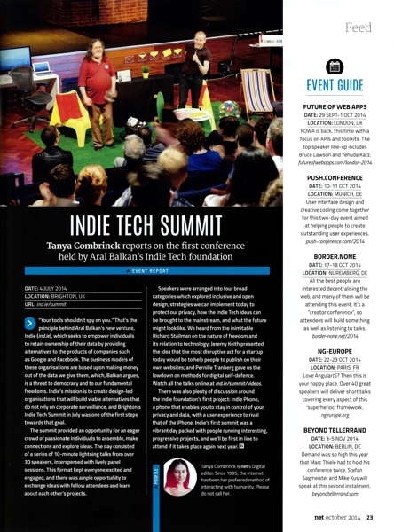

Indie Tech Summit featured in Net Magazine
28th November, 2014 —

The Indie Tech Summit was featured in Net Magazine’s October 2014 Issue 259.
Tania Combrinck was at the summit and wrote a great report covering the event, Jeremy Keith’s talk talk on Indie Web, Aral’s conversation with Richard Stallman, and Pernille Tranberg’s talk about Digital Self Defence.
You can find Net magazine in good newsagents, or buy Issue #259 of Net magazine on their website.